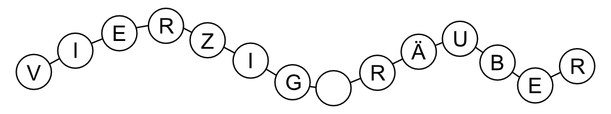
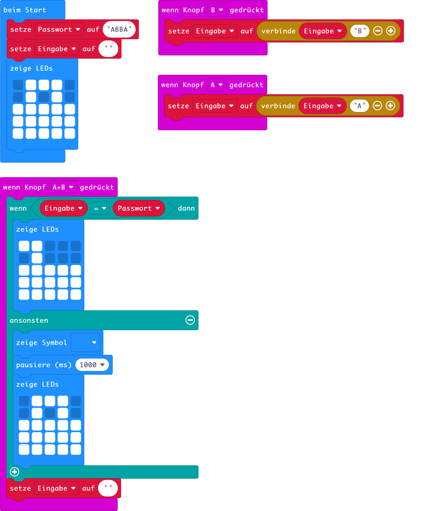

So ging Ali Baba ebenfalls durch die Dornbüsche auf den Felsen zu und sprach mit lauter Stimme: إفتح يا سمسم (iftah ya simsim / Sesam, öffne dich!) Da erschien
erneut das Tor im Felsen und öffnete sich. Und Ali Baba trat in diese seltsame Höhle.
Ali Baba und die vierzig Räuber
Sesam, öffne dich!
In diesem Kapitel werden wir mit dem micro:bit ein Schloss bauen, welche nur bei der Eingabe des richtigen Passwort aufgeht. Da wir auf dem micro:bit nur die Tasten A und B zur Verfügung haben, wird das Passwort nur aus A's und B's bestehen. Ein Passwort könnte zum Beispiel ABBA sein oder BABA. Wenn das Passwort eingegeben wurde, müssen die Tasten A und B zusammen gedrückt werden. Dann wird überprüft ob die Eingabe richtig war. Wenn das richtige Passwort eingegeben wurde, soll sich das Schloss öffnen, ansonsten soll ein trauriges Gesicht erscheinen.
Der Programmcode ist in Abb. 2 gezeigt. Zuerst erstellst du eine Variable mit dem Namen Passwort. Diese Variable enthält den Passwort-Text, zum Beispiel "ABBA". Wenn du versuchst einen Text in den Befehl ändere Passwort auf 0 zu schreiben, funktioniert es nicht. Du brauchst zuerst einen neuen Textblock. Den findest du im Bereich Fortgeschritten im Unterbereich Text. Es ist der erste Befehl " ".
Neben der Variable Passwort gibt es eine Textvariable mit dem Namen Eingabe. Diese Variable enthält den eingegebenen Text, oder String wie die Fachfrau/-mann sagt. String ist Englisch und heisst auf Deutsch Schnur, Saite oder Kette. Stelle dir ein String als eine Buchstabenkette vor.

Abb. 1 – Ein Text ist eine Zeichenkette
Wenn nun die Taste A gedrückt wird, wird der String Eingabe mit dem String Passwort verglichen. Benutze dazu den Befehl zum Textvergleich " " = " ". Falls die Eingabe mit dem Passwort übereinstimmt, wird ein geöffnetes Schloss dargestellt. Falls die Eingabe nicht dem Passwort entspricht, wird eine Sekunde lang ein unglückliches Gesicht gezeigt und dann wieder ein verschlossenes Schloss.

Abb. 2 – Programm zum Schloss.
Aufgaben
- Verändere das Programm so, dass man anstatt der Tasten A und B, den micro:bit nach links und rechts neigen muss um das Passwort einzugeben.
- Verändere das Programm so, dass man anstatt der Tasten A und B, den micro:bit nach links, rechts, oben und unten neigen muss um das Passwort einzugeben.
- Erstelle ein Spiel, bei welchem man sich die Abfolge von A und B merken und anschliessend korrekt wieder eingeben muss. Zuerst muss man sich nur ein Zeichen merken, dann zwei, dann drei, usw.
Autor: T. Jenni
Letzte Änderung: 14. Mai 2021

Einsteigerkurs für den BBC micro:bit von T. Jenni, et al. ist lizenziert unter einer Creative Commons Namensnennung - Nicht-kommerziell - Weitergabe unter gleichen Bedingungen 4.0 International Lizenz.